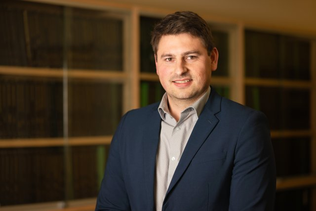
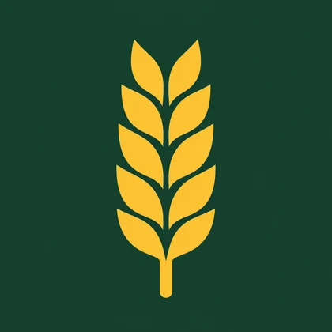

Soil carbon and crop productivity
How crop rotations and soil organic carbon affect yields, productivity, and farm profitability.
University of Alberta · Agricultural Economics
Assistant Professor and RDAR Chair in Applied Agricultural Economics and Risk Management
I study how farm management, markets, and agricultural policy shape the decisions Prairie producers make.

My work examines the economics of crop production and the policies and investments that shape it.
Full publication list →How crop rotations and soil organic carbon affect yields, productivity, and farm profitability.
How seeding dates and nitrogen management affect financial returns under different growing conditions.
Grain marketing and transportation, and the returns to investment in crop breeding.
I share research briefs, factsheets, and decision tools for Prairie producers through PrairieAgEcon.

Research briefs, factsheets, and decision tools, including the Alberta spring wheat decision tool.
I grew up on a grain farm near Eston, Saskatchewan, and operated a grain farm before pursuing my PhD. That experience shapes the questions I bring to research and extension.
News and outreach → · Teaching →University of California, Davis · 2024
Read the dissertation (PDF)University of Saskatchewan · 2018
University of Saskatchewan · 2016